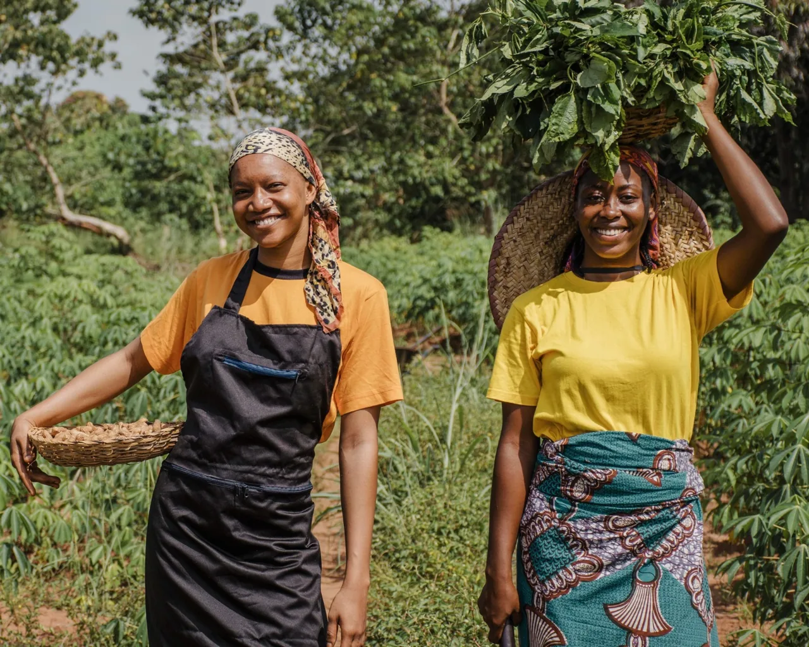
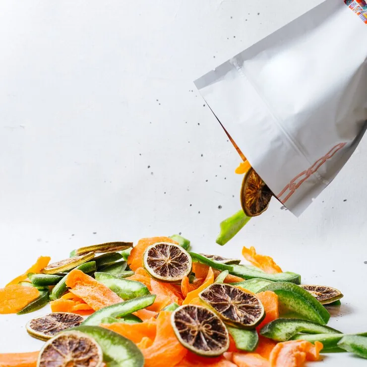
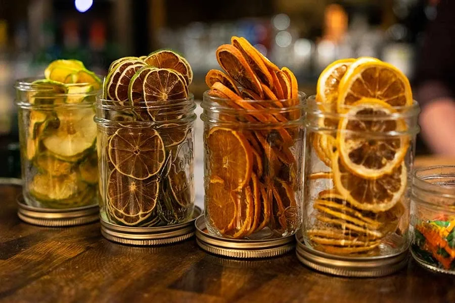
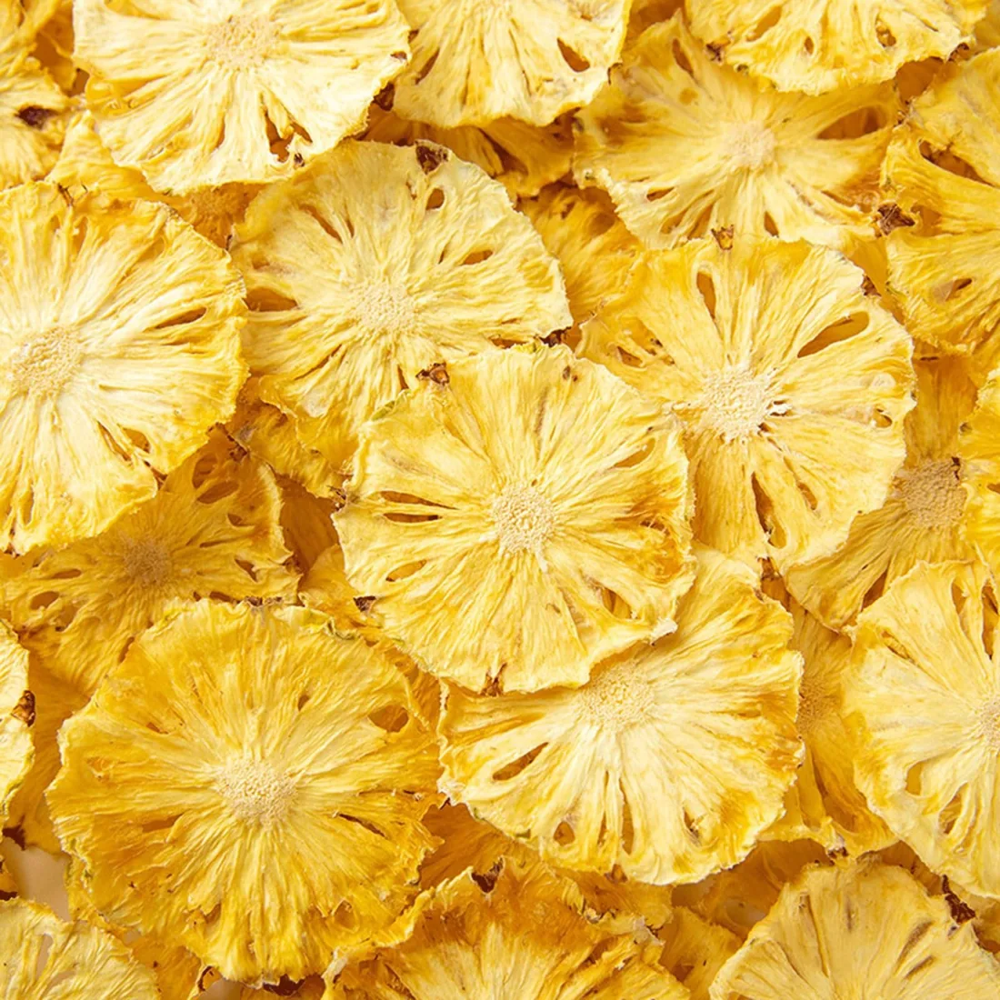
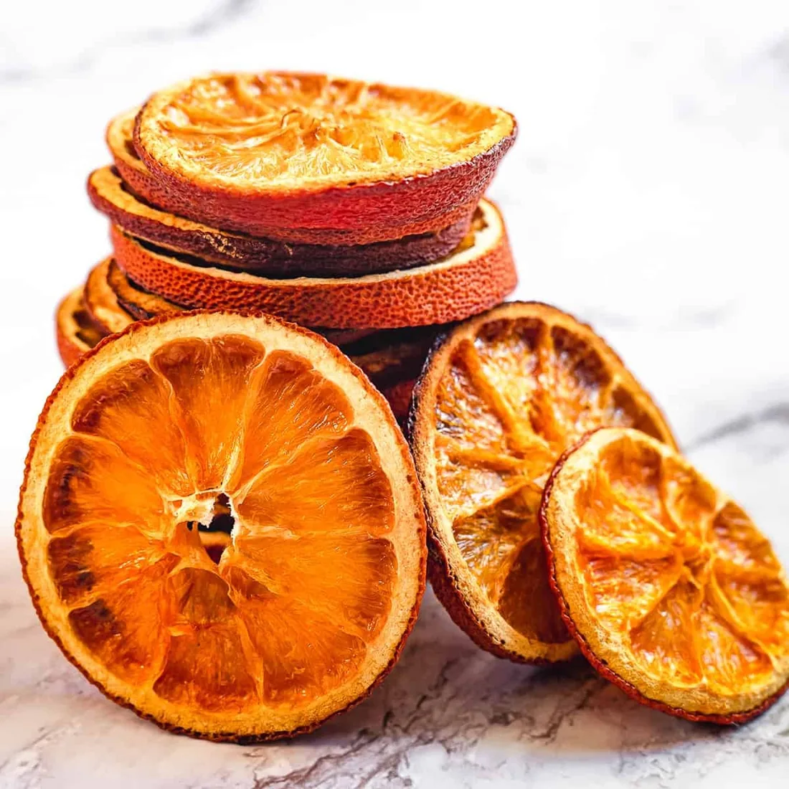
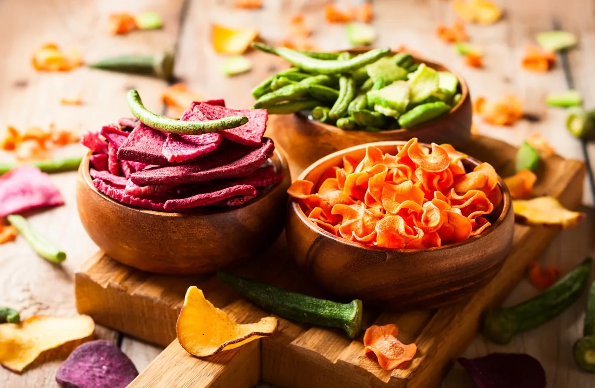
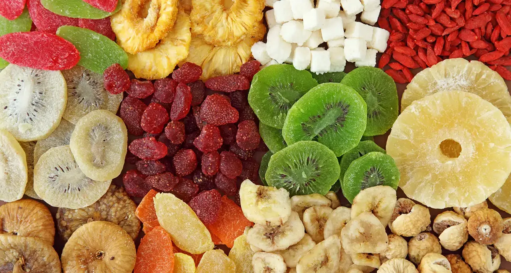
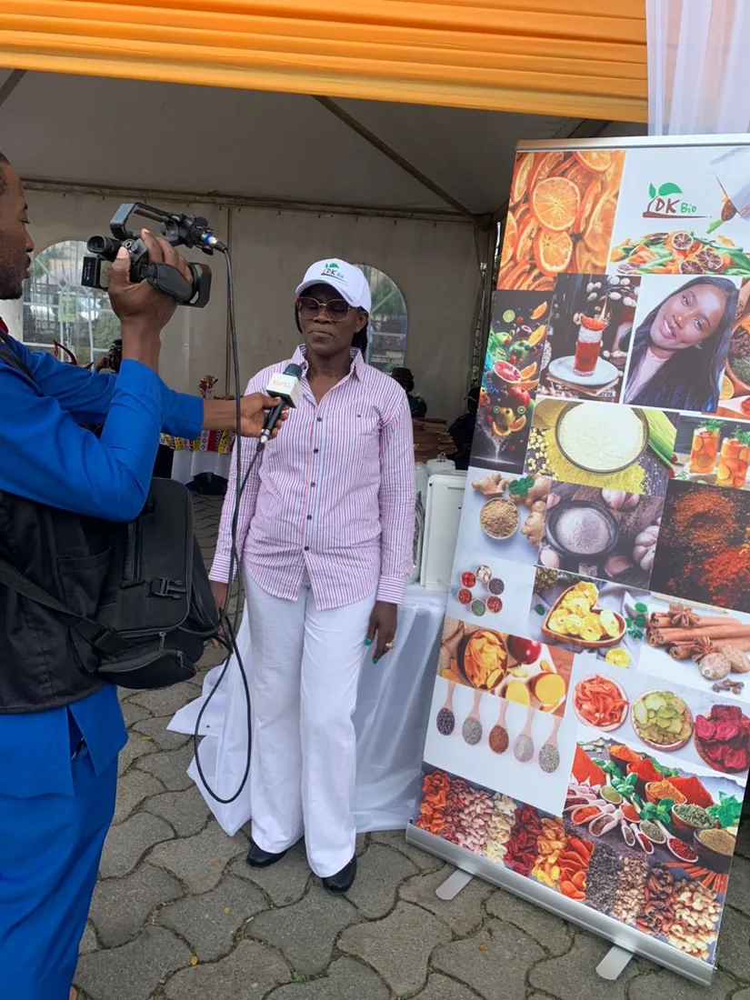

« Récolté avec Amour, Partagé avec le Monde »
DK Bio est une marque née au Cameroun qui promeut l'alimentation locale et durable, en réduisant le gaspillage grâce à la déshydratation.

Présentation de la marque
DK Bio transforme des produits agricoles camerounais en aliments déshydratés.
En 2022, DK Bio est né d'une vision simple : remodeler l'avenir de l'alimentation au Cameroun en transformant le gaspillage en opportunité. Nous célébrons la richesse des produits locaux et les pratiques durables.

.svg)
Notre parcours est fait d'innovation et de durabilité. Rejoignez DK Bio pour réimaginer l’alimentation de demain.
Essence
- Innovation & Santé
- Durabilité & Agriculture locale
- Réduction du gaspillage alimentaire
- Autonomisation des communautés
Vision
"Transformer l'agriculture en pierre angulaire de la prospérité au Cameroun, en créant des emplois durables et en donnant à la prochaine génération les moyens de percevoir la véritable valeur de l'agriculture locale. En transformant notre abondance naturelle en une alimentation innovante et sans gaspillage, nous visons à réduire la dépendance aux importations étrangères et à construire un avenir où l'agriculture est chérie comme un trésor national, alimentant à la fois notre économie et nos communautés"
Mission
« Chez DK Bio, notre mission est de réduire le gaspillage alimentaire, de créer des emplois durables et de promouvoir la valeur de l'agriculture locale au Cameroun. Grâce à des techniques de conservation innovantes telles que la déshydratation, nous transformons les produits locaux en aliments nutritifs et durables, renforçant ainsi les communautés et favorisant l'indépendance économique. Nous sommes dédiés à la construction d'un avenir où la jeunesse camerounaise perçoit l'agriculture comme une industrie précieuse et florissante, qui soutient à la fois l'environnement et l'autosuffisance de la nation.»
Logo & signification
- Symbole de la plante : croissance, renouveau, durabilité.
- Ligne de sol brune : terre, stabilité, agriculture.
- Texte « DK Bio » : héritage (Dongmo Kafack) & écoresponsabilité.
- Slogan : « Récolté avec Amour, Partagé avec le Monde ».
Nos produits & Services
Fruits déshydratés
Conservent les saveurs naturelles, vitamines et minéraux.
Légumes déshydratés
Idéaux pour soupes, ragoûts et autres plats.
Feuilles déshydratées
Épices déshydratées
Poudres déshydratées
- Farine de manioc
- Poudre de bouillie fermentée
- Poudre de tomates
Service à la clientèle
Déshydratation sur mesure : fruits, légumes, feuilles, rhizomes, épices.
Apportez vos produits – nous déshydratons avec un équipement haut de gamme.
Liste de prix
| Catégorie | Article | Quantité | Prix |
|---|---|---|---|
| Épices (poudre) | pour poulet | 500 g | 2000 FCFA |
| Épices (poudre) | pour poisson | 500 g | 2000 FCFA |
| Poudres déshydratées | Farine de manioc | 1 kg | 7000 FCFA |
| Poudres déshydratées | Poudre de bouillie fermentée | 1 kg | 7500 FCFA |
| Poudres déshydratées | pourdre de tomate | 250 g | 3500 FCFA |
| Fruits déshydratés | Ananas (par tranche) | — | 80 FCFA |
| Fruits déshydratés | Orange (par tranche) | — | 40 FCFA |
| Fruits déshydratés | citron (par tranche) | — | 40 FCFA |
| Épices | Piment | 1 kg | 7500 FCFA |
| Épices | Gingembre | 250 g | 3000 FCFA |
| Feuilles | Feuille de Menthe | 250 g | 3000 FCFA |
| Feuilles | Ndolé (lavée, déshydratée, prête à l'emploi) | 250 g | 3000 FCFA |
| Service | Déshydratation (produits de 100 g) | — | 1000 FCFA |
Les prix des fruits déshydratés varient selon la teneur en eau et la durée de séchage.
Imagerie & usages produits

Poudre de bouillie
Utilisation : option saine pour le petit-déjeuner.
Avantages : nutritive, adaptée aux repas familiaux.

Fruits déshydratés
Utilisation : sublimer la saveur des cocktails (ananas, orange, citron).
Exemple : bars & restaurants.

Farine de manioc
Utilisation : alternative sans gluten.
Avantages : substitut à la farine de blé.
Flocons de fruits
Utilisation : mélange à grignoter ou pour les repas.
Avantages : riches en nutriments.

Feuilles de Ndolé (lavées & séchées)
Utilisation : feuilles prêtes à cuire.
Avantages : gain de temps pour plats traditionnels.

Farine de plantain
Utilisation : pour la cuisine et la pâtisserie.
Galerie
Des produits frais et déshydratés.









La direction de DK Bio
En tant que PDG de DK Bio , je représente une génération de jeunes Africains déterminés à transformer le monde par l’innovation et la durabilité. Mon parcours en affaires internationales m’a révélé l’urgence de solutions face au gaspillage alimentaire et à la gestion des ressources au Cameroun.
DK Bio est ma réponse : nous déshydratons fruits, légumes et épices pour prolonger leur conservation, préserver leur valeur nutritive et soutenir l’économie locale.
Mon ambition est claire : faire de DK Bio un symbole d’ingéniosité africaine, inspirer la jeunesse à entreprendre et à bâtir une Afrique plus autonome, tout en partageant la richesse de nos produits avec le monde.
Notre vision : réduire le gaspillage alimentaire, autonomiser les communautés locales et partager la richesse des produits africains avec le monde.
Signature : Mme Dongmo Donfack Patricia
Contact
Contact.dkbio@gmail.com
+237 699 81 11 73
En face de l’école Le Petit Monde
Médias & téléchargements

Confidentialité
Ce site conserve le choix du thème dans votre navigateur. Si vous contactez DK Bio par e-mail ou par téléphone, vous utilisez votre propre application et choisissez les informations à communiquer.